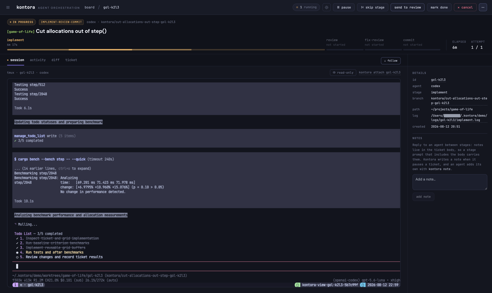

Markdown tickets in. Git branches out.
Kontora watches a folder of markdown tickets. Each one gets its own git worktree, branch, and agent.
$ brew install kontora
Or give it to a coding agent: "Help me install and set up Kontora: llms.txt"

A ticket is a file in your repo.
Markdown with YAML frontmatter: id, status, pipeline, path. Write it by hand or run kontora new. The watcher picks up any ticket with status: todo, but nothing runs until kontora: true is set.
--- id: kon-q88f kontora: true status: todo pipeline: implement-review-commit path: ~/projects/kontora --- # Add a health check endpoint
Every stage has a policy.
A stage is a prompt template with a timeout and a model. A pipeline runs stages in order, with a policy for success and for failure. Stages share one worktree, so one writes PLAN.md and the next reads it.
implement
agent: claude on_success: next on_failure: pauseFresh worktree, the ticket description as the prompt, the agent in its own tmux session.
review
max_retries: 1 on_failure: retryA second pass over the same worktree, usually on a different model. It reads what the previous stage left behind.
commit
agent: claude on_success: human_reviewStage, commit, and push. The ticket moves to human review with every stage's log attached.

One worktree per ticket
Every ticket gets its own git worktree and branch. Run five agents at once and your working tree never moves.
Any agent with a CLI
Claude Code, Pi, OpenCode, or anything that takes a prompt. Declare the binary and its arguments once. A stage can override the model.
Board in the browser or the terminal
The same kanban runs as a web dashboard and as a TUI. From either one you can attach to a running agent's tmux session.
Drive it from another machine
The CLI talks to the daemon over the same HTTP API as the dashboard. Set KONTORA_URL to a host on your tailnet and attach to a live session.
Four commands to a running board.
Needs git, tmux, and one agent CLI. kontora doctor tells you what's missing before you start.